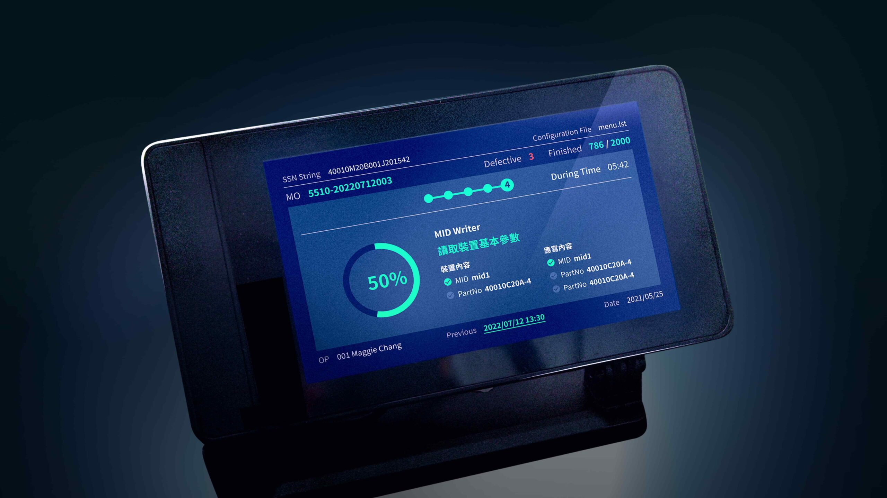
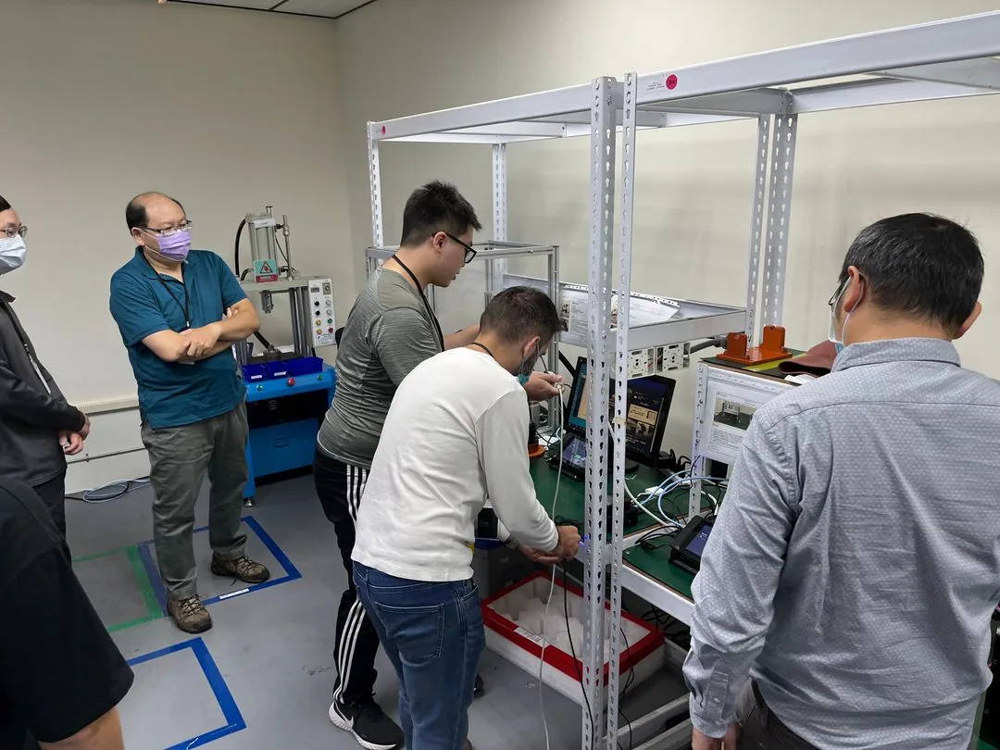
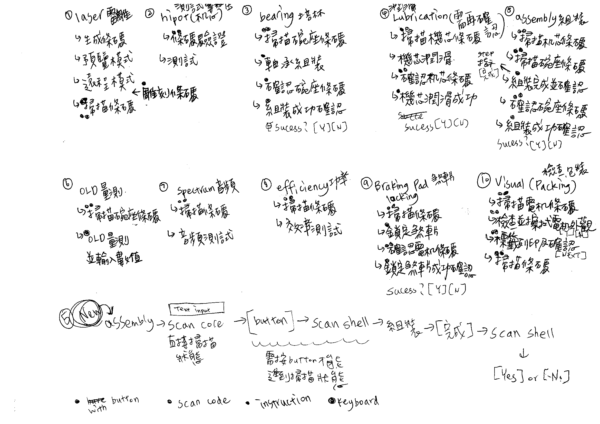
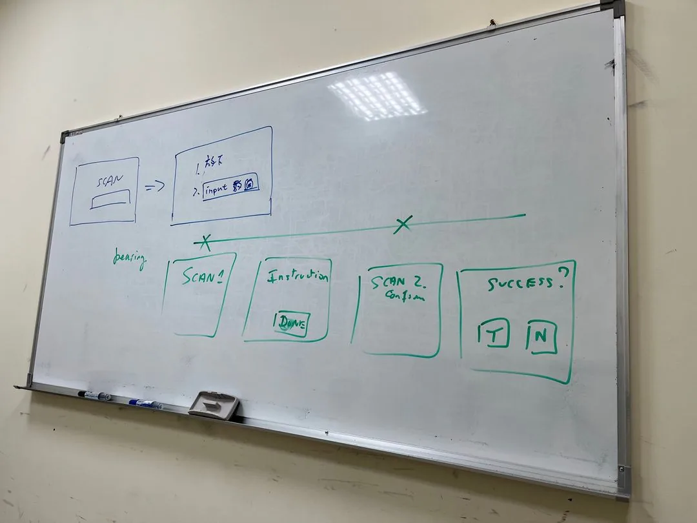
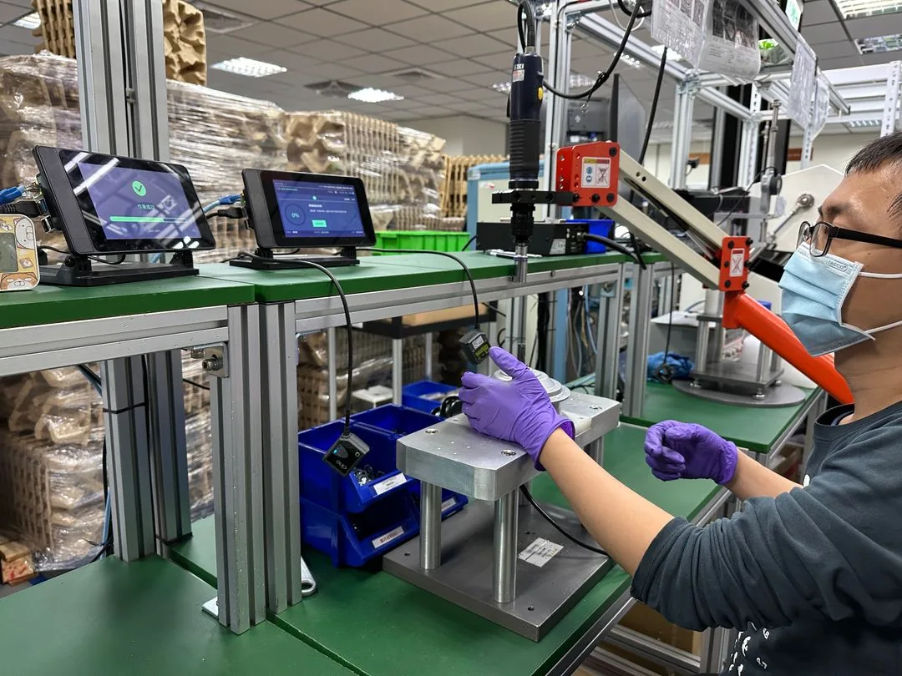


BEFORE
Finish the flow, then discover the issue.
Limited visibility into earlier steps made it difficult to understand what had happened.
FACTORY SYSTEM TOOL · PRODUCT DESIGN
I translated operator and production supervisor needs into a factory interface—helping operators understand each station’s tasks and progress, recognize errors, and report them clearly.

Factory System Tool (FTS) brings manufacturing, production records and product testing into a work order system. It was developed in the context of incompatible equipment systems across subcontractors and difficult technical handoffs.
As Product Designer, I interviewed operators and production supervisors, translated their needs into the main screen, and worked with the Product Manager on requirements and specifications.
Previously, operations were centralized on two computers. A station error often became apparent only after the entire flow had finished. Operators could also struggle to confirm whether a previous step had been missed or its data was correct.
BEFORE
Limited visibility into earlier steps made it difficult to understand what had happened.
DESIGN FOCUS
Give operators a clearer view of station work and the information they need to report a problem.
Operators may be assigned to a different station each day. Interviews with operators and production supervisors helped me identify the information the main screen needed to prioritize: the station’s task, clear step progress, and access appropriate to each role.



I designed the main screen around the needs identified in the interviews, bringing station tasks and step progress into a shared view. The aim was to help operators orient themselves when moving between stations and communicate issues with clearer context.
Understand what work is being performed at the current station.
See where the operation is within its sequence.
Understand the reported error and explain it when escalating.

Not every product requires a continuous sequence of dependent tests. When an error does not affect the next test, FTS displays an error message and allows the remaining tests to continue.
FOR ERRORS THAT DO NOT AFFECT SUBSEQUENT TESTS
The issue is resolved at retest.
Set the product aside for an engineer to inspect.
The interface needed to communicate the error without treating every failure as a reason to stop all remaining tests. Clear feedback also gives operators the context to report unresolved issues.

My contribution was to connect what operators and supervisors needed with the interface the team built: clearer station tasks and progress, understandable error feedback, and controls matched to each role.
The project reinforced the importance of understanding how work happens on the floor. A useful factory interface needs to support both the expected sequence and the decisions people make when a test fails.